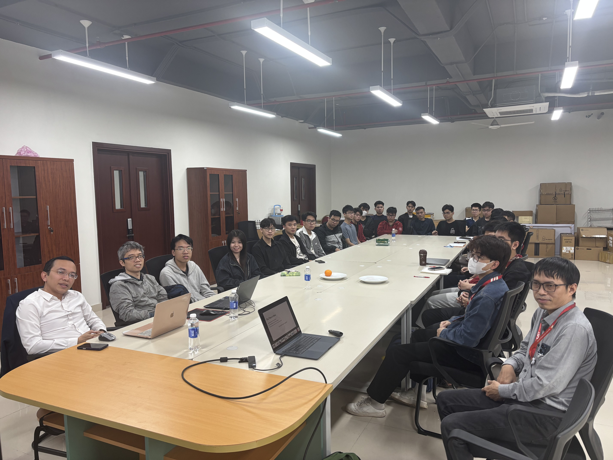

Project Overview
This project develops trustworthy embodied intelligence for real-world robotics, with safety, robustness, and reliability as first-class design goals.
Instead of optimizing only for task completion, we build systems that can reason, act, and recover under uncertainty while respecting explicit safety constraints.
Our framework combines robotic foundation models, learning-enhanced safe control, and formal verification so that perception, decision-making, and low-level control are aligned in a single dependable stack.

Master Plan & Research Tracks
The AI-Robotics master plan is organized around two tightly coupled research tracks:
-
Track 1 – Trust & Verified Control
- Robust and adaptive baseline control to handle disturbances and model uncertainty
- Safe constraints and shielding to enforce hard safety limits
- Learning-enhanced safe control that learns residuals while preserving guarantees
- Verification and certificates (e.g. Lyapunov functions) for provable stability and safety
-
Track 2 – Robotic Foundation Model
- Data collection and teleoperation datasets under the LeRobot framework
- Imitation and reinforcement learning with modern policies (e.g. diffusion policies, ACT, openVLA)
- Multi-task, cross-embodiment and language-conditioned policies
- Unified world models combining physics and semantics for long-horizon reasoning
These tracks jointly support our long-term goal of Trustworthy Embodied General Intelligence.

Key Research Areas
- Embodied Intelligence Models: Multimodal perception and policy learning for generalizable robot behaviour
- Learning-Enhanced Safe Control: Combining classical control with learning-based components under safety constraints
- Sim-to-Real & Cross-Embodiment Transfer: Policies that generalize across different robot platforms and environments
- World Models & Long-Horizon Planning: Modeling dynamics and semantics to support predictive, explainable behaviour
- Human-Robot Interaction: Intuitive interfaces for collaboration with non-expert users
Robotic Platforms
Our research is deployed on a diverse set of platforms:
- YOR – long-term platform for large-scale data collection and manipulation
- SO101-ARM – available robotic arm for manipulation and control experiments
- Drone (optional) – aerial robotics for perception and planning under dynamics constraints
- SOLO-12 – quadruped platform for locomotion and whole-body control
- Soft / Continuum Robots – in-progress platforms for compliant manipulation
- Inverted Pendulum – available benchmark for fast prototyping of safe and verified control
Team Members
Faculty
- Thầy Nguyễn Thái Minh Tuấn
- Thầy Nguyễn Thái Tất Hoan
- Thầy Phạm Thanh Chung
- Thầy Trương Quốc Chiến
Student Members
- Nguyễn Minh Tường
- Nguyễn Đình Hải
- Nguyễn Trọng Giáp
- Vũ Minh Đức
- Nguyễn Việt Anh
- Đồng Anh Quốc
- Phạm Bá Long
- Trần Ngọc Thưởng
- Vương Đức Minh
- Phạm Ngọc Khánh
- Đinh Bảo Sơn
- Lê Anh Đức
- Nguyễn Hải Đăng
- Trần Bình Minh
- Lê Nguyễn Ngọc Vũ
- Đặng Tuấn Anh
- Lê Tiến Đạt
Publications
- Ngoc, V. L. N., Truong-Quoc, C., & Nguyen-Thai, M.-T. (2025). Exploring PD Control Effects on the Basins of Attraction in Segway Dynamics. Proceedings of the 8th International Conference on Engineering Mechanics and Automation (ICEMA 2025), Hanoi, November 14-15, 2025. DOI: 10.15625/vap.2026.0011
🔍 Search for Trustworthy embodied intelligence related papers on the Research page